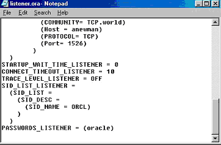
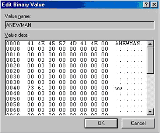
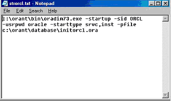
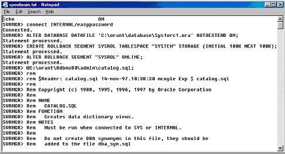
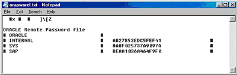

Алексей Лукацкий,
заместитель директора по маркетингу НИП "Информзащита", сертифицированный специалист
по безопасности
luka@infosec.ru.
О базах данных сейчас пишут очень много. И немудрено. Первая половина 2001 г. ознаменовалась официальным выпуском сразу нескольких новых версий систем управления базами данных (СУБД) таких известных производителей, как Oracle, Microsoft и Sybase. Многие авторы подробно описывают, как легко станет жить администраторам, перешедшим на новые версии популярных СУБД. Однако немногие уделяют внимание такому немаловажному аспекту функционирования баз данных, как обеспечение их безопасности. Мало того, даже на сайтах производителей не всегда можно найти сведения о защитных механизмах СУБД. Например, на сайте российского представительства компании Sybase (http://www.sybase.ru) я не нашел ни одного упоминания о защитных свойствах Sybase Adaptive Server - за исключением общих слов о том, что СУБД Sybase защищена от несанкционированного доступа. И это грустно. Недооценка этого аспекта приводит к весьма печальным последствиям. В качестве примеров упомяну кражу 16 тысяч номеров кредитных карт у компании Western Union и кражу конфиденциальной информации об участниках мирового экономического форума в Давосе. Есть и менее известные, но не менее интересные примеры, иллюстрирующие незащищенность баз данных, причем не только в финансовой сфере.
В июне 2000 г. некий Келли сумел проникнуть в базу данных федерального казначейства Австралии. Злоумышленник получил доступ к конфиденциальной информации о 17 000 бизнесменов и сообщил об этом в прямом эфире радиостанции ABC. Что характерно, казначейство отказалось давать какие-либо комментарии по поводу расследования этого дела. Другой пример также показателен, потому что демонстрирует, как используется труд хакеров в политической борьбе. В 2000 г. одна из оппозиционных мексиканских партий наняла хакеров для доступа к засекреченной базе данных правящей революционной партии Мексики (PRI). В результате был получен доступ к данным аудита, со списком ведущих бизнесменов, принимавших участие в сомнительных сделках. В частности, один из кредитов, фигурировавший в этой информации, получило местное отделение правящей партии, а другой - компания, которой владел сын бывшего высокопоставленного члена этой партии. Оказалось также, что три банкира выдали кредиты самим себе. Все это, а также ряд других факторов, привело к проигрышу правящей партии.
И наконец, последний пример. 12 августа 2000 г. неизвестный хакер проник в базу данных, содержащую информацию о 25 тысячах клиентов английской торговой компании Safeway. Его заинтересовали исключительно адреса электронной почты, по которым он сделал рассылку. В разосланном от имени этой компании письме сообщалось о 25%-ном повышении цен, "…а те, кому это не нравится, - говорилось в конце, - могут делать покупки в Tesco или Sainsbury" (т. е. у конкурентов Safeway).
Все это лишний раз говорит о том, что не стоит недооценивать вопросы обеспечения информационной безопасности для баз данных. И не стоит откладывать их "на потом", когда система уже будет введена в строй и в ней начнет циркулировать конфиденциальная информация. Можно даже немного попугать читателя и сказать, что, согласно 274 статье Уголовного кодекса, персонал, отвечающий за функционирование базы данных, может быть привлечен к уголовной ответственности за "нарушение правил эксплуатации ЭВМ… повлекшее уничтожение, блокирование или модификацию охраняемой законом информации" (срок тюремного заключения - до пяти лет).
Как же защитить базы данных от постоянных посягательств различных злоумышленников? Это непростой вопрос, который необходимо решать с каждой из СУБД (Oracle, Microsoft SQL Server, Sybase и т.д.) отдельно. Но прежде чем начать процесс повышения их защищенности, необходимо понять, как же проникают хакеры в базы данных и какие "дыры" при этом задействуются. Именно этой теме и посвящена данная статья. Хочу сразу отметить, что описать все уязвимые места, присущие базам данных, невозможно даже в серии статей. Поэтому я остановлюсь только на наиболее известных и типичных из них, отсылая читателя к более подробным источникам информации. В частности, информация по уязвимостям Oracle доступна по адресу http://otn.oracle.com/deploy/security/alerts.htm, а для Microsoft SQL Server по адресу http://support.microsoft.com. Существует и российский источник информации об уязвимостях СУБД. Это сервер НИП "Информзащита" (http://www.infosec.ru), на котором размещено описание около 300 уязвимостей СУБД Oracle, Microsoft SQL Server и Sybase, обнаруживаемых системой анализа защищенности Database Scanner американской компании Internet Security Systems. Эта система проводит регулярный анализ заданных серверов баз данных, на основе которого выдаются рекомендации по устранению обнаруженных уязвимостей. На сервере НИП "Информзащита" бесплатно можно получить и эту информацию, за которую многие другие компании, занимающиеся консультациями в области информационной безопасности, взимают немалую плату. Итак, перейдем к описанию некоторых слабых мест систем управления базами данных.
Уязвимости сетевого взаимодействия
Большинство современных СУБД построено по технологии клиент-сервер, что подразумевает доступ клиентской части к серверу по каналам связи. В качестве сетевого протокола, по которому осуществляется взаимодействие, как правило, выступает IP (и TCP над ним), поскольку никакой другой из распространенных протоколов не обеспечивает межплатформенного взаимодействия (например, между рабочей станцией Windows 98 и сервером Solaris, да еще через Интернет).
Доступ клиентов к серверу баз данных осуществляется путем обращения к так называемому слушающему сервису, функционирующему на порте с определенным номером (1433 - для Microsoft SQL Server, 1521 - для Oracle и, как правило, 5000 - для Sybase). Несанкционированный доступ к учетной записи, отвечающей за старт и останов слушающего сервиса, приводит к тому, что злоумышленник может остановить данный сервис, тем самым блокировав все попытки подключения клиентов к серверу базы данных. В СУБД Oracle пароль этой учетной записи хранится в открытом виде в файле listener.ora, доступ к которому никак не ограничен.
|  | Рис. 1. Пароль для доступа к "слушающему" сервису.
|
Но нарушителю не обязательно даже знать пароль. Он может попросту послать на "слушающий" порт специальным образом сформированные пакеты, приводящие к нарушению работоспособности сервера баз данных (т. е. атака "отказ в обслуживании").
Еще одна уязвимость баз данных, взаимодействующих по протоколу TCP/IP, связана с тем, что информация между клиентом и сервером в абсолютном большинстве случаев передается в незащищенном виде. Установив в сети анализатор протоколов или используя анализатор, встроенный в ОС (как, например, Network Monitor для Windows NT), можно без проблем перехватывать пароли и идентификаторы пользователей, не говоря уже о конфиденциальных данных, хранящихся в БД.
Уязвимости учетных записей
Давайте представим, что сотрудник, имевший доступ к базе данных, уволен. Какие действия должен произвести администратор безопасности? Правильно: удалить или как минимум заблокировать учетную запись, принадлежавшую этому сотруднику. И он бы рад это сделать (в Oracle это делается с помощью команды DROP USER <имя пользователя>, а в Sybase или Microsoft SQL Server - с помощью Sybase Central и Enterprise Manager соответственно), однако менеджеры по персоналу очень часто забывают оповестить администраторов о том, что сотрудник уволен (или ушел в отпуск). Это приводит к тому, что данная учетная запись может быть использована для попытки проникновения в базу данных и маскировки под другого пользователя. К сожалению, современные СУБД не имеют механизма, позволяющего обнаруживать неиспользуемые учетные записи, что открывает перед злоумышленниками большой простор для несанкционированной деятельности.
Администратор - это царь и бог в любой системе, и его учетная запись должна защищаться как зеница ока. Но увы... Не все производители уделяют этому вопросу достаточно внимания. Например, в Microsoft SQL Server 6.5 пароль администратора (учетная запись - sa) хранился в открытом виде в системном реестре (ключ HKEY_CURRENT_USER\SOFTWARE\Microsoft\MSSQLServer\SQLEW\Registered Servers\SQL 6.5).
|  | Рис. 2. Хранение пароля (ANEWMAN) администратора Microsoft SQL Server.
|
В следующих версиях (7 и выше) компания Microsoft попыталась исправить этот недочет, но не слишком успешно. Несмотря на то, что пароль хранится теперь в зашифрованном виде (ключ -HKEY_CURRENT_USER\SOFTWARE\Microsoft\MSSQLServer\SQLEW\Registered Servers X\SQL Server Group), он легко дешифруется с помощью утилиты L0phtCrack.
Еще одна проблема Microsoft SQL Server также связана с системным реестром,
в котором хранятся (пусть и в зашифрованном виде) пароли не только пользователей
БД, но и пользователей операционной системы. С помощью расширенных хранимых
процедур xp_regdeletevalue, xp_regwrite, xp_regread и т. д. можно манипулировать
ключами системного реестра как угодно. Например, прочтя с помощью команды xp_regread
'HKEY_LOCAL_MACHINE', 'SECURITY\SAM\DOMAINS\ACCOUNT\USERS\000001F4',
'F'
неизвестный зашифрованный пароль учетной записи пользователя, можно заменить его на известный пароль и войти в систему, замаскировавшись под ничего не подозревающего пользователя. А если у злоумышленника есть время, то он может попытаться "взломать" зашифрованный пароль с помощью уже упомянутой утилиты L0phtCrack.
Компания Oracle недалеко ушла от Microsoft и не уделила пристального внимания защите системных паролей. А вот хакеры не обошли стороной этот вопрос, в результате чего выявились некоторые уязвимости, приводящие к тому, что злоумышленник может получить доступ к защищаемым ресурсам СУБД. Пароль встроенной учетной записи INTERNAL, используемой, например, для старта и останова СУБД, хранится в открытом виде в файле strXXX.cmd (XXX - это идентификатор SID, который по умолчанию соответствует "orcl") и в файле \orant\database\spoolmain.log (записывается в процессе создания базы данных). Заметим: доступ к этим файлам по умолчанию имеют все пользователи.
|  | Рис. 3. Пароль учетной записи INTERNAL.
|
|  |
| Рис. 4. Пароль учетной записи INTERNAL.
|
Кроме того, все пароли учетных записей для СУБД Oracle хранятся в файле orapwXXX (для UNIX) или pwdXXX.ora (для Windows NT), где XXX - это SID. И хотя в этом файле хранятся зашифрованные значения паролей учетных записей, они могут быть подвергнуты атаке Brute Force, позволяющей подобрать правильное значение пароля. Мало того, одно неизвестное зашифрованное значение пароля может быть заменено на другое зашифрованное, но известное значение, что откроет дорогу злоумышленнику к базе данных.
|  |
| Рис. 5. Хранение паролей в Oracle.
|
Еще одна проблема, о которой нельзя умолчать, присуща не только СУБД, но и многим другим программным средствам. Речь идет о контроле "слабых" паролей, содержащих только буквы (без цифр), малое число символов и т.д. Предыдущие версии Oracle, Sybase, Microsoft SQL Server не содержали никаких средств контроля таких паролей, что позволяло пользователям выбирать для них абсолютно неподходящие значения типа "1111", "alex", "sex", "aaaa" и т.д. Такие пароли подбираются злоумышленниками в течение нескольких секунд, что (в случае отсутствия механизма контроля неудачных попыток регистрации в СУБД) открывает злоумышленнику доступ к конфиденциальным данным. В новых версиях Sybase и Oracle появились такие механизмы проверки, но по умолчанию они не используются.
Мало того, что пользователи выбирают "слабые" пароли, очень часто они оставляют без изменения пароли, заданные производителем по умолчанию. А таких паролей существует огромное множество. Например, по адресу http://security.nerdnet.com указано несколько сотен паролей, задаваемых по умолчанию, для различного программно-аппаратного обеспечения, в том числе и для СУБД. Например, для Oracle приводятся такие пары идентификатор/пароль, как system/manager, Scott/Tiger, internal/oracle sys/change_on_install.
Уязвимости подсистемы контроля доступа к СУБД
На минуту представим такую ситуацию. Ночь. На седьмом этаже здания, в котором размещается крупная финансовая корпорация, в вычислительном центре жужжит сервер баз данных, ежедневно обрабатывающий информацию, стоимость которой составляет несколько миллиардов долларов. И вдруг лампочки на передней панели сервера начинают мигать, сигнализируя о том, что к серверу обратились с запросом, который он и стал обрабатывать. На первый взгляд, обычная ситуация, в которой не усматривается ничего криминального. Но это только на первый взгляд. Ведь на дворе ночь (случай с удаленным доступом из другого часового пояса я сейчас опускаю). Ночью сотрудники корпорации не работают и не делают никаких запросов. А вот злоумышленник, осуществляющий свою несанкционированную деятельность в нерабочее время, может делать. СУБД должна блокировать такого рода попытки, но на практике ни одна из СУБД (Oracle, Microsoft SQL Server и т.д.) не контролирует доступ к базе данных в нерабочее время.
Любая система контроля доступа построена по принципу проверки соответствия предъявленных идентификатора и пароля пользователя эталонным значениям. Если злоумышленник не знает пароля, то он будет пытаться проникнуть в базу данных, подставляя различные слова ("атака по словарю"), сведения о пользователе или иную информацию, которая может служить паролем (например, идентификатор пользователя, прочитанный наоборот). Предыдущие версии Sybase (11.x), Oracle (7.x), Microsoft SQL Server (6.x) не содержали никаких механизмов контроля неправильных попыток регистрации в системе, что позволяло злоумышленнику неограниченное число раз пытаться проникнуть в систему. А так как и для доступа к компьютеру, и для доступа к СУБД, и для доступа к Интернету пользователи обычно используют один и тот же пароль, то, узнав пароль пользователя СУБД, нарушитель с высокой степенью вероятности может установить полный контроль над учетной записью этого пользователя. И это несмотря на то, что в операционной системе можно задать число неудачных попыток регистрации в системе, после превышения которого учетная запись блокируется. Справедливости ради необходимо сказать, что в Sybase 12.x и в Oracle 8.x и более поздних версиях появился механизм контроля неудачных попыток регистрации в системе (sp_configure "maximum failed logins" в Sybase и FAILED_LOGIN_ATTEMPT в Oracle).
Завершая статью, отметим, что для СУБД действуют те же правила, что и для операционной системы. Этот вид ПО также нуждается в регулярной проверке с целью обнаружения всех несанкционированных изменений и наличия "дыр". Делать это можно вручную, используя уже названные источники информации (например, Web-сервер "Информзащиты" и серверы производителей) или применяя автоматизированные системы анализа защищенности, такие как Database Scanner компании Internet Security Systems (http://www.iss.net), SQL <> Secure Policy компании BrainTree Security Software (http://www.braintree.co.uk), e-Secure компании Cyrano (http://www.cyrano.com), SFProtect компании Hewlett-Packard (http://www.hp.com).